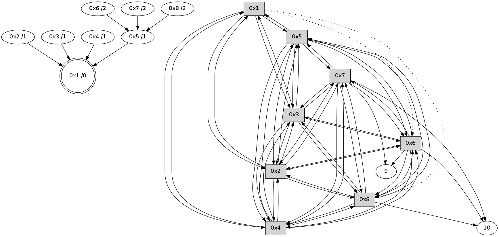

>> << IDX [start] -100 -25 -5 +0 +5 +25 +100 [335.080632925]
 Previous packets
----------------------------------------------------------------------
330.351811 beacon01(11f6) #0 coord=01,02,03,04,05,06,07,08,0a,09 cycle=688.0ms assoc
-- color-indic=0 64 9f 9c
330.361964 beacon02(11f6) #0 coord=01,02,03,04,05,06,07,08,0a,09 cycle=688.0ms assoc 64 0c ad
330.371946 beacon03(11f6) #0 coord=01,02,03,04,05,06,07,08,0a,09 cycle=688.0ms assoc 64 76 e0
330.381946 beacon04(11f6) #0 coord=01,02,03,04,05,06,07,08,0a,09 cycle=688.0ms assoc 64 01 0a
330.391946 beacon05(11f6) #0 coord=01,02,03,04,05,06,07,08,0a,09 cycle=688.0ms assoc 64 7b 47
330.401946 beacon06(11f6) #0 coord=01,02,03,04,05,06,07,08,0a,09 cycle=688.0ms assoc 64 f5 90
330.411949 beacon07(11f6) #0 coord=01,02,03,04,05,06,07,08,0a,09 cycle=688.0ms assoc 64 8f dd
330.421950 beacon08(11f6) #0 coord=01,02,03,04,05,06,07,08,0a,09 cycle=688.0ms assoc 64 0a 4c
330.510267 [STC(8)->5-.->1 #0.3 to-color d=2]
330.541233 [STC(6)->5-.->1 #0.3 to-color d=2]
330.546384 [Hello(1): seq=157 sym=5,3,2,4 asym=8,6 sysInfo= stat=5:5,0,3,0/3:8,0,3,0/2:2,0,3,0/4:7,0,3,0/8:10,0,3,0/6:4,0,2,0]
330.562571 [STC(7)->5-.->1 #0.3 to-color d=2]
----------------------------------------------------------------------
331.139951 beacon01(11f6) #0 coord=01,02,03,04,05,06,07,08,0a,09 cycle=688.0ms assoc
-- color-indic=0 64 ab 84
331.150107 beacon02(11f6) #0 coord=01,02,03,04,05,06,07,08,0a,09 cycle=688.0ms assoc 64 38 b5
331.160086 beacon03(11f6) #0 coord=01,02,03,04,05,06,07,08,0a,09 cycle=688.0ms assoc 64 42 f8
331.170086 beacon04(11f6) #0 coord=01,02,03,04,05,06,07,08,0a,09 cycle=688.0ms assoc 64 35 12
331.180086 beacon05(11f6) #0 coord=01,02,03,04,05,06,07,08,0a,09 cycle=688.0ms assoc 64 4f 5f
331.190087 beacon06(11f6) #0 coord=01,02,03,04,05,06,07,08,0a,09 cycle=688.0ms assoc 64 c1 88
331.200088 beacon07(11f6) #0 coord=01,02,03,04,05,06,07,08,0a,09 cycle=688.0ms assoc 64 bb c5
331.210091 beacon08(11f6) #0 coord=01,02,03,04,05,06,07,08,0a,09 cycle=688.0ms assoc 64 3e 54
331.258269 [Hello(2): seq=157 sym=1,7,5,3,8,4,6 sysInfo= stat=1:12,0,3,0/7:5,0,3,0/5:5,0,3,0/3:4,0,3,0/8:8,0,3,0/4:5,0,3,0/6:9,0,2,0]
331.265656 [Hello(6): seq=157 sym=10,7,5,3,8,4,2,9 sysInfo= stat=10:7,0,2,0/7:12,0,3,0/5:15,0,3,0/3:12,0,3,0/8:8,0,3,0/4:3,0,2,0/2:6,0,3,0/9:2,0,2,0]
331.299907 [Hello(3): seq=157 sym=1,2,7,5,6,8,4 sysInfo= stat=1:13,0,3,0/2:4,0,3,0/7:6,0,3,0/5:5,0,3,0/6:0,0,3,0/8:8,0,3,0/4:9,0,3,0]
331.324260 [Hello(8): seq=157 sym=2,7,5,6,3,4,10 sysInfo= stat=2:5,0,3,0/7:13,0,3,0/5:12,0,3,0/6:9,0,2,0/3:10,0,3,0/4:5,0,2,0/10:15,0,2,0]
331.330265 [Hello(4): seq=157 sym=1,2,5,6,3,8,7 sysInfo= stat=1:12,0,3,0/2:5,0,3,0/5:7,0,3,0/6:0,0,3,0/3:9,0,3,0/8:8,0,3,0/7:11,0,3,0]
331.347940 [Hello(7): seq=157 sym=10,5,6,8,3,2,4,9 sysInfo= stat=10:7,0,3,0/5:13,0,3,0/6:9,0,2,0/8:12,0,3,0/3:3,0,3,0/2:4,0,3,0/4:3,0,2,0/9:9,0,2,0]
331.389631 [Hello(5): seq=157 sym=1,2,7,6,3,8,4 sysInfo= stat=1:13,0,3,0/2:3,0,3,0/7:10,0,3,0/6:2,0,2,0/3:7,0,3,0/8:9,0,3,0/4:9,0,3,0]
----------------------------------------------------------------------
331.928087 beacon01(11f6) #0 coord=01,02,03,04,05,06,07,08,0a,09 cycle=688.0ms assoc
-- color-indic=0 64 17 81
331.938249 beacon02(11f6) #0 coord=01,02,03,04,05,06,07,08,0a,09 cycle=688.0ms assoc 64 84 b0
331.948222 beacon03(11f6) #0 coord=01,02,03,04,05,06,07,08,0a,09 cycle=688.0ms assoc 64 fe fd
331.958222 beacon04(11f6) #0 coord=01,02,03,04,05,06,07,08,0a,09 cycle=688.0ms assoc 64 89 17
331.968223 beacon05(11f6) #0 coord=01,02,03,04,05,06,07,08,0a,09 cycle=688.0ms assoc 64 f3 5a
331.978223 beacon06(11f6) #0 coord=01,02,03,04,05,06,07,08,0a,09 cycle=688.0ms assoc 64 7d 8d
331.988224 beacon07(11f6) #0 coord=01,02,03,04,05,06,07,08,0a,09 cycle=688.0ms assoc 64 07 c0
331.998227 beacon08(11f6) #0 coord=01,02,03,04,05,06,07,08,0a,09 cycle=688.0ms assoc 64 82 51
332.158983 [Hello(1): seq=158 sym=5,3,2,4 asym=8,6 sysInfo= stat=5:6,0,3,0/3:9,0,3,0/2:3,0,3,0/4:8,0,3,0/8:11,0,3,0/6:5,0,2,0]
----------------------------------------------------------------------
332.716223 beacon01(11f6) #0 coord=01,02,03,04,05,06,07,08,0a,09 cycle=688.0ms assoc
-- color-indic=0 64 d3 8f
332.726375 beacon02(11f6) #0 coord=01,02,03,04,05,06,07,08,0a,09 cycle=688.0ms assoc 64 40 be
332.736358 beacon03(11f6) #0 coord=01,02,03,04,05,06,07,08,0a,09 cycle=688.0ms assoc 64 3a f3
332.746358 beacon04(11f6) #0 coord=01,02,03,04,05,06,07,08,0a,09 cycle=688.0ms assoc 64 4d 19
332.756358 beacon05(11f6) #0 coord=01,02,03,04,05,06,07,08,0a,09 cycle=688.0ms assoc 64 37 54
332.766358 beacon06(11f6) #0 coord=01,02,03,04,05,06,07,08,0a,09 cycle=688.0ms assoc 64 b9 83
332.776359 beacon07(11f6) #0 coord=01,02,03,04,05,06,07,08,0a,09 cycle=688.0ms assoc 64 c3 ce
332.786363 beacon08(11f6) #0 coord=01,02,03,04,05,06,07,08,0a,09 cycle=688.0ms assoc 64 46 5f
332.833531 [STC(1) #0.4 to-color d=0]
332.841977 [Hello(6): seq=158 sym=10,7,5,3,8,4,2,9 sysInfo= stat=10:7,0,2,0/7:13,0,3,0/5:0,0,3,0/3:13,0,3,0/8:9,0,3,0/4:4,0,2,0/2:6,0,3,0/9:3,0,3,0]
332.917795 [Hello(4): seq=158 sym=1,2,5,6,3,8,7 sysInfo= stat=1:13,0,4,0/2:5,0,3,0/5:8,0,3,0/6:1,0,3,0/3:9,0,3,0/8:8,0,3,0/7:12,0,3,0]
332.921313 [STC(4)->1 #0.4 to-color d=1]
332.933482 [Hello(2): seq=158 sym=1,7,5,3,8,4,6 sysInfo= stat=1:13,0,4,0/7:6,0,3,0/5:6,0,3,0/3:5,0,3,0/8:9,0,3,0/4:6,0,4,0/6:11,0,2,0]
332.936375 [STC(2)->1 #0.4 to-color d=1]
332.940846 [Hello(5): seq=158 sym=1,2,7,6,3,8,4 sysInfo= stat=1:14,0,4,0/2:4,0,4,0/7:10,0,3,0/6:3,0,2,0/3:7,0,3,0/8:9,0,3,0/4:9,0,4,0]
332.944679 [STC(5)->1 #0.4 to-color d=1]
332.946314 [Hello(3): seq=158 sym=1,2,7,5,6,8,4 sysInfo= stat=1:14,0,4,0/2:5,0,4,0/7:7,0,3,0/5:6,0,3,0/6:1,0,3,0/8:9,0,3,0/4:10,0,4,0]
332.950506 [STC(3)->1 #0.4 to-color d=1]
----------------------------------------------------------------------
333.504361 beacon01(11f6) #0 coord=01,02,03,04,05,06,07,08,0a,09 cycle=688.0ms assoc
-- color-indic=0 64 6f 8a
333.514534 beacon02(11f6) #0 coord=01,02,03,04,05,06,07,08,0a,09 cycle=688.0ms assoc 64 fc bb
333.524496 beacon03(11f6) #0 coord=01,02,03,04,05,06,07,08,0a,09 cycle=688.0ms assoc 64 86 f6
333.534497 beacon04(11f6) #0 coord=01,02,03,04,05,06,07,08,0a,09 cycle=688.0ms assoc 64 f1 1c
333.544496 beacon05(11f6) #0 coord=01,02,03,04,05,06,07,08,0a,09 cycle=688.0ms assoc 64 8b 51
333.554497 beacon06(11f6) #0 coord=01,02,03,04,05,06,07,08,0a,09 cycle=688.0ms assoc 64 05 86
333.564496 beacon07(11f6) #0 coord=01,02,03,04,05,06,07,08,0a,09 cycle=688.0ms assoc 64 7f cb
333.574501 beacon08(11f6) #0 coord=01,02,03,04,05,06,07,08,0a,09 cycle=688.0ms assoc 64 fa 5a
333.651261 [Hello(1): seq=159 sym=5,3,2,4 asym=8,6 sysInfo= stat=5:7,0,4,0/3:10,0,4,0/2:4,0,4,0/4:8,0,4,0/8:11,0,3,0/6:6,0,2,0]
333.713532 [STC(6)->5-.->1 #0.4 to-color d=2]
333.737823 [STC(7)->5-.->1 #0.4 to-color d=2]
----------------------------------------------------------------------
334.292497 beacon01(11f6) #0 coord=01,02,03,04,05,06,07,08,0a,09 cycle=688.0ms assoc
-- color-indic=0 64 7b e4
334.302669 beacon02(11f6) #0 coord=01,02,03,04,05,06,07,08,0a,09 cycle=688.0ms assoc 64 e8 d5
334.312633 beacon03(11f6) #0 coord=01,02,03,04,05,06,07,08,0a,09 cycle=688.0ms assoc 64 92 98
334.322633 beacon04(11f6) #0 coord=01,02,03,04,05,06,07,08,0a,09 cycle=688.0ms assoc 64 e5 72
334.332633 beacon05(11f6) #0 coord=01,02,03,04,05,06,07,08,0a,09 cycle=688.0ms assoc 64 9f 3f
334.342633 beacon06(11f6) #0 coord=01,02,03,04,05,06,07,08,0a,09 cycle=688.0ms assoc 64 11 e8
334.352634 beacon07(11f6) #0 coord=01,02,03,04,05,06,07,08,0a,09 cycle=688.0ms assoc 64 6b a5
334.362637 beacon08(11f6) #0 coord=01,02,03,04,05,06,07,08,0a,09 cycle=688.0ms assoc 64 ee 34
334.402910 [Hello(2): seq=159 sym=1,7,5,3,8,4,6 sysInfo= stat=1:14,0,4,0/7:6,0,4,0/5:7,0,4,0/3:6,0,4,0/8:9,0,3,0/4:6,0,4,0/6:11,0,3,0]
334.437486 [Hello(8): seq=159 sym=2,7,5,6,3,4,10 sysInfo= stat=2:7,0,4,0/7:15,0,4,0/5:14,0,3,0/6:10,0,3,0/3:10,0,4,0/4:6,0,3,0/10:0,0,2,0]
334.442174 [Hello(4): seq=159 sym=1,2,5,6,3,8,7 sysInfo= stat=1:14,0,4,0/2:7,0,4,0/5:9,0,4,0/6:1,0,4,0/3:10,0,4,0/8:8,0,3,0/7:12,0,4,0]
334.454222 [Hello(5): seq=159 sym=1,2,7,6,3,8,4 sysInfo= stat=1:15,0,4,0/2:5,0,4,0/7:10,0,4,0/6:3,0,3,0/3:8,0,4,0/8:9,0,3,0/4:10,0,4,0]
334.486888 [Hello(3): seq=159 sym=1,2,7,5,6,8,4 sysInfo= stat=1:15,0,4,0/2:6,0,4,0/7:7,0,4,0/5:8,0,3,0/6:1,0,4,0/8:9,0,3,0/4:11,0,4,0]
334.503809 [Hello(7): seq=159 sym=10,5,6,8,3,2,4,9 sysInfo= stat=10:8,0,3,0/5:0,0,4,0/6:10,0,3,0/8:12,0,3,0/3:4,0,4,0/2:6,0,4,0/4:4,0,3,0/9:11,0,3,0]
334.516150 [Hello(6): seq=159 sym=10,7,5,3,8,4,2,9 sysInfo= stat=10:8,0,2,0/7:15,0,4,0/5:2,0,4,0/3:14,0,4,0/8:9,0,3,0/4:5,0,3,0/2:8,0,4,0/9:4,0,3,0]